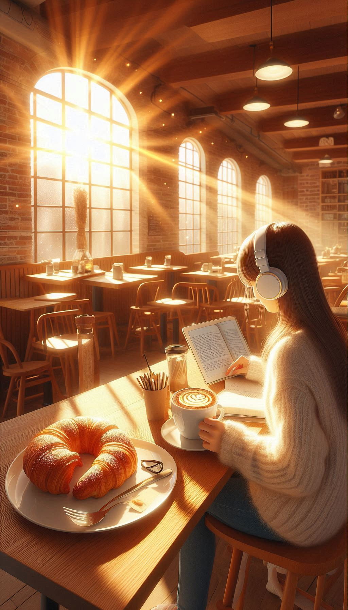

Menu
Nosso Menu
Cafés
- Espresso - R$ 5,00
- Latte - R$ 8,00
- Cappuccino - R$ 7,00
- Mocha - R$ 9,00
Chás
- Chá Verde - R$ 6,00
- Chá Preto - R$ 6,00
- Chá de Ervas - R$ 7,00
- Chá Gelado - R$ 8,00
Confeitaria
- Croissant - R$ 4,00
- Bolo de Chocolate - R$ 6,00
- Cookie de Chocolate - R$ 3,00
- Tarte de Limão - R$ 5,00
Nossa História
Fundado em 2020, o Café Aroma nasceu da paixão pelo café e pela convivência. Nossa cafeteria é um espaço acolhedor onde amigos se encontram, famílias se reúnem e todos desfrutam de momentos especiais. Utilizamos apenas grãos de alta qualidade e ingredientes frescos para garantir o melhor sabor em cada produto.
Nossa Equipe
Nossa equipe é formada por baristas apaixonados e confeiteiros talentosos, dedicados a proporcionar a melhor experiência para você. Cada membro do nosso time traz um toque especial, garantindo que cada visita ao Café Aroma seja inesquecível.